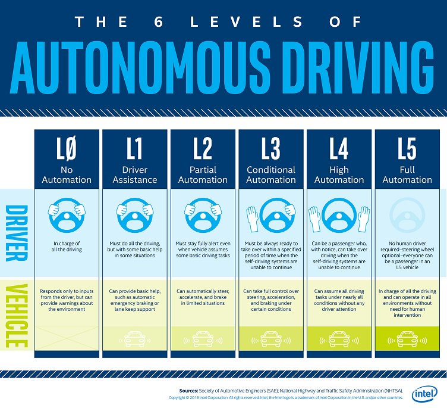

自动驾驶等级分类
开篇介绍
自动驾驶技术的分级体系是整个行业共同遵循的"语言"。没有统一的分级标准，工程师、监管者、消费者之间的沟通将陷入混乱——一家车企声称的"自动驾驶"可能只是另一家所说的"驾驶辅助"。
国际自动机工程师学会（SAE International）于2014年发布、2021年更新的 J3016 标准，是目前全球最广泛认可的自动驾驶分级基准。该标准将驾驶自动化程度从 L0 到 L5 划分为六个级别，核心判断维度包括：谁来执行驾驶操作、谁来监控环境、谁来应对后备情况。
中国于2021年发布的国家标准 GB/T 40429—2021《汽车驾驶自动化分级》 与 SAE J3016 基本对应，在术语和具体描述上进行了本土化调整，是国内产品认证与法规制定的技术依据。

图片来源：SAE International
SAE 六级分类总览
| 级别 | 名称 | 驾驶操作 | 环境监测 | 后备响应 | 适用场景 |
|---|---|---|---|---|---|
| L0 | 无自动化 | 人类 | 人类 | 人类 | 全场景，无自动化 |
| L1 | 驾驶辅助 | 人类+系统（单一） | 人类 | 人类 | ACC 或 LKA（二选一） |
| L2 | 部分自动化 | 系统（横向+纵向） | 人类 | 人类 | 高速公路巡航+车道保持 |
| L3 | 条件自动化 | 系统 | 系统 | 人类（需准备接管） | 特定 ODD 内自主行驶 |
| L4 | 高度自动化 | 系统 | 系统 | 系统 | ODD 内完全自主 |
| L5 | 完全自动化 | 系统 | 系统 | 系统 | 任意场景，无 ODD 限制 |
各级详解
L0：无自动化（No Automation）
L0 是最基础的级别，车辆的所有驾驶任务——转向、加减速、制动——全部由人类驾驶员完成。系统可以提供警告或即时辅助，但不承担任何持续的驾驶控制。
典型的 L0 功能包括： - 前碰撞预警（FCW）：检测到危险时发出声光警报，但不主动制动 - 车道偏离预警（LDW）：检测到车道偏离时报警，但不主动修正方向 - 盲区监测（BSM）：提示驾驶员盲区有车，但不介入
注意：这些功能属于 ADAS（高级驾驶辅助系统）的信息提示层，不构成自动化。驾驶员对车辆的完全控制权不受影响。
责任归属：100% 由驾驶员承担。
L1：驾驶辅助（Driver Assistance）
L1 系统可以在横向或纵向中的一个维度上辅助控制车辆，但不能同时控制两个维度。驾驶员必须始终保持对车辆的总体控制，并持续监控驾驶环境。
两种典型的 L1 功能：
自适应巡航控制（ACC，Adaptive Cruise Control）： - 纵向控制：自动调节车速，与前车保持设定安全距离 - 驾驶员仍须掌控方向盘
车道保持辅助（LKA，Lane Keeping Assist）： - 横向控制：车辆偏离车道时自动施加转向力矩修正 - 驾驶员仍须控制车速
L1 功能在中低端量产车上已相当普及。中国销售的新车中，2022年以后 AEB（自动紧急制动）和 LDW 的搭载率已超过 70%。
责任归属：驾驶员承担主要责任，系统提供辅助。
L2：部分自动化（Partial Automation）
L2 是当前量产规模最大的自动驾驶级别。系统可以同时控制横向（转向）和纵向（加减速），但驾驶员必须全程监控路况，随时准备接管。
L2 系统的核心组合：ACC + LKA，通常还叠加以下功能： - 自动变道辅助（ALC） - 自动跟车（TJA，Traffic Jam Assist） - 高速公路自动导航（NOA/NGP/NOP）
代表性产品：
| 品牌 | 系统名称 | 主要功能覆盖 |
|---|---|---|
| 特斯拉 | Autopilot / FSD | 高速 + 城区（争议见后文） |
| 通用 | Super Cruise | 高速公路点对点，驾驶员监控摄像头 |
| 小鹏 | NGP / XNGP | 高速 + 城区 NOA |
| 蔚来 | NOP+ | 高速 + 城区 NOA |
| 华为（问界） | ADS 2.0 | 不依赖高精地图的城区 NOA |
| 理想 | AD Max | 高速 + 城区 NOA |
L2+ 的说法：严格来说，SAE 标准中没有"L2+"这一官方级别。业界用"L2+"非正式地指代功能更强的 L2 系统（如具备城区 NOA 能力），以区别于只能在高速公路使用的基础 L2。它在法律上仍属于 L2，驾驶员责任不变。
责任归属：驾驶员承担全部责任，制造商在产品缺陷范围内承担产品责任。
L3：条件自动化（Conditional Automation）
L3 是自动驾驶分级中争议最大、落地最难的级别，也是 L2 和 L4 之间的关键过渡。
核心特征：在特定的操作设计域（ODD）内，系统全面接管驾驶任务，包括环境监测。驾驶员可以从事其他活动（如看视频、处理文件），但必须在系统发出接管请求（TOR，Take-Over Request）后在规定时间内接管车辆。
L3 的关键约束： - 激活条件严格：通常限于高速公路、限速 60 km/h 以下、交通拥堵等特定场景 - 接管时间要求：一般为 10 秒内，具体由车型和场景决定 - 超出 ODD 时：系统必须向驾驶员发出请求，无法自主处理
全球首个商业 L3 车型：奔驰 DRIVE PILOT（S 级/EQS）于2021年获得德国联邦机动车管理局批准，是全球首款获得政府认证的 L3 量产车型，限速 60 km/h、仅限德国特定高速公路路段使用。
责任归属：系统激活期间，制造商承担责任。这是 L3 与 L2 最根本的法律差异，也是大多数车企对推出 L3 产品持谨慎态度的主要原因。
L4：高度自动化（High Automation）
L4 系统在其 ODD 范围内无需任何人类干预即可完成所有驾驶任务。当出现超出 ODD 的情况时，车辆会自行执行最小风险状态（MRC，Minimal Risk Condition）——例如安全减速靠边停车——而不是依赖人类接管。
L4 的标志性差异：没有"驾驶员"这一角色（在 ODD 内）。
代表性 L4 产品与运营：
| 公司 | 产品/服务 | 运营地区 | 状态 |
|---|---|---|---|
| Waymo | Waymo One | 美国凤凰城、旧金山 | 商业付费运营（无安全员） |
| 百度 Apollo | 萝卜快跑 | 北京、武汉、重庆等 | 商业付费运营（部分无安全员） |
| 小马智行 | PonyPilot+ | 北京、广州 | 测试运营 |
| Cruise | 已暂停 | — | 2023年事故后暂停运营 |
| Zoox | 内部测试 | 美国 | 尚未对外开放 |
L4 目前主要应用场景为 Robotaxi（无人出租车）和 Robobus（无人公交），以及园区/矿山/港口等封闭场景的无人驾驶车辆。
责任归属：ODD 内事故由制造商/运营商承担责任。
L5：完全自动化（Full Automation）
L5 是理论上的最终形态：系统可在任何道路条件、任何天气、任何场景下完成驾驶任务，无需方向盘、油门或刹车踏板。
现实情况：目前全球范围内尚无 L5 量产车型，也没有明确的商业落地时间表。业界普遍认为，L5 面临的挑战不仅是技术层面的（如极端天气感知、复杂交叉路口决策），更是伦理和法律层面的。
部分研究者认为 L5 在现实道路上可能永远无法实现100%覆盖，行业更可行的终点或许是在越来越宽泛的 ODD 下运行的 L4 系统。
L2 与 L3 的本质区别
L2 与 L3 之间是自动驾驶最重要的分界线，其本质不是技术能力的差异，而是责任主体的转移。
监控责任对比
| 维度 | L2 | L3 |
|---|---|---|
| 环境监测责任 | 驾驶员 | 系统 |
| 驾驶员可否分心 | 不可以（需始终监控） | 可以（ODD 内） |
| 接管义务 | 随时（系统不会主动请求） | 接到 TOR 后规定时间内 |
| 事故责任主体 | 驾驶员 | 制造商（系统激活期间） |
法律责任影响
L3 的责任转移对整个汽车行业具有颠覆性影响：
- 制造商风险敞口扩大：一旦系统激活期间发生事故，制造商面临直接索赔，而非依赖驾驶员责任条款免责
- 保险模式重构：传统以驾驶员为投保主体的车险体系需要引入产品责任险维度
- 取证难度增加：需要明确判断事故发生时系统是否处于激活状态，对 EDR（事件数据记录仪）的法律要求随之提升
- 国际法规不一致：各国对 L3 的法律定义和责任归属规定不同，增加了跨国销售的合规复杂度
这些因素共同解释了为何许多整车企业（OEM）宁愿绕过 L3，将资源集中于功能更强的 L2+（商业策略上避开责任风险）或直接跳向 L4（Robotaxi 场景）。
中国分级标准 GB/T 40429
标准概述
GB/T 40429—2021 由工业和信息化部牵头制定，2021年8月发布，是中国自动驾驶产品认证、测试评价和政策制定的官方技术依据。
与 SAE J3016 的对应关系
| SAE J3016 | GB/T 40429 | 中文名称 |
|---|---|---|
| L0 | 0级 | 应急辅助 |
| L1 | 1级 | 部分驾驶辅助（PA） |
| L2 | 2级 | 组合驾驶辅助（CA） |
| L3 | 3级 | 有条件自动驾驶（HA） |
| L4 | 4级 | 高度自动驾驶（HA） |
| L5 | 5级 | 完全自动驾驶（FA） |
注：GB/T 40429 中 L4 对应"高度自动驾驶"，L5 对应"完全自动驾驶"，与 SAE 的 High/Full Automation 对应。
主要差异点
- L0 重新定义：GB/T 40429 将 L0 命名为"应急辅助"，强调该级别仍允许系统提供短暂的紧急干预（如 AEB），而 SAE 原版 L0 对此描述较为模糊
- 术语本土化：使用"操作设计域"而非直接引用 ODD 缩写，便于国内法规文件引用
- 测试标准配套：GB/T 40429 与 GB/T 39263（道路测试）、GB/T 41798（功能安全）等系列标准形成体系，而 SAE J3016 仅提供分类定义
ODD：操作设计域
ODD（Operational Design Domain，操作设计域）是理解自动驾驶分级的关键前提，也是 L3/L4 系统能够运行的必要边界条件。
ODD 的定义
ODD 描述了一个自动驾驶系统被设计为可以正常运行的特定条件集合。超出这些条件，系统需要降级或请求人类接管。
ODD 的主要维度
| 维度 | 典型约束示例 |
|---|---|
| 地理区域 | 特定城市、特定路网、特定车道类型 |
| 道路类型 | 高速公路、城市快速路、普通城市道路 |
| 速度范围 | 0–60 km/h、0–130 km/h |
| 天气条件 | 能见度 > 100 m、无雪无冰、降雨量 < X mm/h |
| 时间段 | 仅白天、仅特定时段 |
| 交通密度 | 拥堵/非拥堵 |
| 基础设施 | 需要高精地图覆盖、需要 V2X 信号 |
| 其他 | 不含施工区域、不含无保护左转 |
ODD 对分级的影响
- L2 系统：有 ODD，但超出范围时驾驶员已在监控，可立即介入
- L3 系统：ODD 是法律责任边界，系统必须准确识别 ODD 边界并提前发出 TOR
- L4 系统：ODD 是系统能力的硬边界，超出则执行 MRC，不依赖人类
- L5 系统：理论上 ODD = 全部道路条件，无约束
ODD 的精确定义和验证测试，是 L3/L4 系统获得政府认证的核心技术挑战之一。
各级主流量产产品对比
| 品牌 | 车型（示例） | 自动化级别 | 核心传感器 | 主要功能 | 参考价格区间 |
|---|---|---|---|---|---|
| 特斯拉 | Model 3/Y（FSD） | L2（官方） | 8×摄像头，无雷达 | 高速+城区 NOA、自动变道、召唤 | 含 FSD 约30万+ |
| 通用 | 凯迪拉克 CT6 | L2 | 摄像头+雷达+激光雷达 | 高速公路 Super Cruise，驾驶员监控 | 约60万+ |
| 奔驰 | S 级/EQS | L3（德国） | 摄像头+毫米波雷达+激光雷达 | DRIVE PILOT（限德国高速，≤60 km/h） | 约100万+ |
| 宝马 | 7系 | L2+ | 摄像头+毫米波雷达 | 高速公路 NOA，驾驶员监控 | 约80万+ |
| 小鹏 | P7i/G6/X9 | L2+ | 摄像头+激光雷达+毫米波雷达 | 全国城区 XNGP，不依赖高精地图 | 约20–40万 |
| 华为/问界 | M7/M9 | L2+ | 摄像头+激光雷达+毫米波雷达 | ADS 2.0 城区 NOA | 约25–60万 |
| 蔚来 | ET7/ES8 | L2+ | 摄像头+激光雷达+毫米波雷达 | NOP+，高速+部分城区 | 约30–55万 |
| 理想 | L9/MEGA | L2+ | 摄像头+激光雷达+毫米波雷达 | AD Max，城区 NOA | 约40–55万 |
| 比亚迪 | 仰望U8/汉 | L2 | 摄像头+毫米波雷达 | 高速 NOA，城区辅助 | 约20–110万 |
| Waymo | Jaguar I-PACE（改装） | L4 | 摄像头+激光雷达+毫米波雷达 | Robotaxi（凤凰城/旧金山） | 非消费品 |
| 百度 Apollo | 极狐/文远知行改装 | L4 | 摄像头+激光雷达+毫米波雷达 | 萝卜快跑（武汉等城市） | 非消费品 |
常见误区澄清
误区一："L4 一定比 L3 更安全"
这一说法不准确。分级描述的是功能范围和责任归属，而非绝对安全性。一个严格限定在小范围 ODD 内的 L4 系统，在其运行范围内可能比一个拥有宽泛 ODD 的 L3 系统更可靠——因为前者面临的场景更单一、更可预测。
换言之，ODD 的边界比级别数字更能反映系统的实际能力。
误区二："特斯拉 FSD 是 L4 或 L5"
特斯拉官方将 FSD（Full Self-Driving）定性为 L2 辅助驾驶系统，驾驶员必须随时保持注意力并准备接管。"Full Self-Driving"是商业命名，并非技术级别声明。美国 NHTSA 和多国监管机构均已明确，FSD 属于 L2 范畴。使用 FSD 时发生的事故，驾驶员依然承担法律责任。
误区三："中国市场的'智能驾驶'都是 L3"
中国市场宣传中常见"高阶智驾""城市 NOA""全场景智驾"等说法，但这些产品在法律定义上几乎全部属于 L2 或 L2+。截至2025年，中国尚无经法规认证的 L3 量产商业车型（深圳已有地方性立法框架，但正式获批的 L3 商业产品仍处于试点阶段）。
误区四："L3 是过渡级别，会被跳过"
确实有部分车企选择"跳过 L3"直接布局 L4，主要动机是规避 L3 的法律责任。但 L3 在技术路线上有其独特价值：它使系统积累了大量"接管请求"场景的数据，有助于提升 L4 系统的边界处理能力。德国、日本等地已有正式 L3 立法，预计未来会有更多 L3 产品进入市场。
误区五："没有方向盘就是 L4/L5"
取消方向盘是 L4/L5 车辆的可能设计选择，但并非判断标准。L4 系统的核心是在 ODD 内无需人类干预，而非车内硬件形态。部分 L4 Robotaxi 保留了应急操控接口，部分则完全取消。硬件设计与自动化级别是两个独立维度。
参考资料
- SAE International. J3016_202104: Taxonomy and Definitions for Terms Related to Driving Automation Systems for On-Road Motor Vehicles. 2021.
- 中国国家标准化管理委员会. GB/T 40429—2021 汽车驾驶自动化分级. 2021.
- NHTSA. Automated Vehicles for Safety. U.S. Department of Transportation.
- 工业和信息化部. 智能网联汽车技术路线图 2.0. 中国汽车工程学会, 2020.